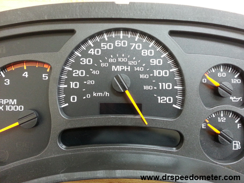

APA ITU KALKULUS?
Intinya, kalkulus itu hubungannya dengan perubahan

Ada sebuah cerita, dikisahkan 2 orang yaitu Sam dan Alex sedang berjalan naik mobil ... akan tetapi speedometer nya rusak.
Alex :
"Hei Sam! Berapa kecepatan kita sekarang?"
Sam :
"Tunggu bentar ..."
"Dalam 1 menit terakhir kita berjalan sejauh 1.2 km, jadi kecepatan kita:"
1.2 km per menit x 60 menit dalam satu jam = 72 km/jam
Alex :
"Enggak, Sam! Bukan kecepatan rata2 dalam semenit terakhir, atau bahkan sedetik terakhir, aku mau tau kecepatan kita TEPAT SEKARANG INI."
Sam :
"OK, kita hitung disini ... pas di plang depan... MULAI!"
"OK, ketika di samping tiang kita berada di detik ke nol, dan jaraknya adalah ... nol meter!"
Jadi kecepatannya adalah 0m / 0s = 0/0 = Gatau :(
"Aku tidak bisa menghitungnya, Alex! Aku harus butuh selisih jarak dan selisih waktu, dan tai kamu bilang waktunya nol? Tidak bisa...."
Bagaimana kalau nilainya dibuat benar-benar mendekati?
But our story is not finished yet!
Sam and Alex get out of the car, because they have arrived on location. Sam is about to do a stunt:
Sam will do a jump off a 20 m building.
Alex, as photographer, asks:
"How fast will you be falling after 1 second?"
Sam uses this simplified formula to find the distance fallen:
d = 5t2
- d = Distance / Jarak (dalam meter)
- t = Time / Waktu (dalam detik)
(Note: the formula is a simpler version of falling due to gravity: d = ½gt2)
Example: at 1 second Sam has fallen
d = 5t2 = 5 × 12 = 5 m
But how fast is that? Speed is distance over time:
So at 1 second:
"BUT", says Alex, "again that is an average speed, since you started the jump, ... I want to know the speed at exactly 1 second, so I can set up the camera properly."
Well ... at exactly 1 second the speed is:
So again Sam has a problem.
Think about it ... how do we figure out a speed at an exact instant in time?
What is the distance? What is the time difference?
They are both zero, giving us nothing to calculate with!
But Sam has an idea ... invent a time so short it won't matter.
Sam won't even give it a value, and will just call it "Δt" (called "delta t").
So Sam works out the difference in distance between t and t+Δt
At 1 second Sam has fallen
5t2 = 5 × (1)2 = 5 m
At (1+Δt) seconds Sam has fallen
5t2 = 5 × (1)2 = 5 m
We can expand (1+Δt)2:
(1+Δt)2 = (1+Δt)(1+Δt)
= 1 + 2Δt + (Δt)2
So at (1+Δt) seconds Sam has fallen
d = 5 × (1+2Δt+(Δt)2) m
d = 5 × (1+2Δt+(Δt)2) m
In Summary:
At 1 detik: d = 5 m
At (1+Δt) detik: d = 5 + 10Δt + 5(Δt)2 m
So between 1 second and (1+Δt) seconds we get:
Change in d = 5 + 10Δt + 5(Δt)2 − 5 m
Change in distance over time:
So the speed is 10 + 5Δt m/s, and Sam thinks about that Δt value ... he wants Δt to be so small it won't matter ... so he imagines it shrinking towards zero and he gets:
Kecepatan = 10 m/s
Wow! Sam got an answer!
Sam: "I will be falling at exactly 10 m/s"
Alex: "I thought you said you couldn't calculate it?"
Sam: "That was before I used Calculus!"
YEP! Tadi barusan adalah kalkulus